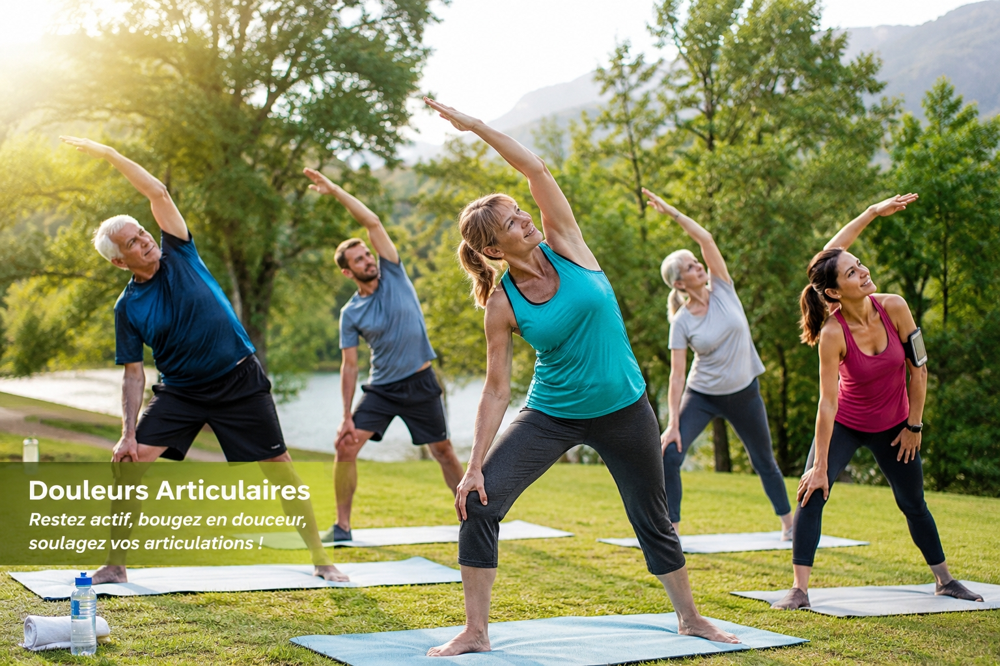

📑 Dans ce guide
Genoux qui grincent en montant les escaliers, épaules sensibles à la musculation, hanches raides au réveil... Plus on reste actif, plus les articulations travaillent — et plus elles méritent qu'on en prenne soin. Bonne nouvelle : avec les bons réflexes, on peut rester sportif toute sa vie sans les abîmer.
Pourquoi vos articulations grincent ?
- Usure du cartilage : il amortit les chocs, mais se régénère lentement avec l'âge. À partir de 30 ans, la production de collagène diminue d'environ 1% par an.
- Inflammation : surentraînement, mauvaise technique ou récupération insuffisante créent des micro-inflammations chroniques qui dégradent le cartilage.
- Muscles stabilisateurs faibles : si le muscle ne fait pas son travail, l'articulation encaisse à sa place. C'est la cause #1 des douleurs chez les sportifs occasionnels.
- Carences : collagène, oméga-3, vitamine D et hydratation sont le "carburant" du cartilage. Sans eux, la réparation est impossible.

5 réflexes science-backed pour des articulations solides
- Échauffez-vous 10 minutes avant chaque séance : le cartilage se lubrifie en mouvement. Marchez, faites des cercles avec les épaules, des flexions légères. Jamais de sport intense à froid.
- Renforcez les muscles stabilisateurs (épaules, genoux, hanches) : c'est votre assurance-vie articulaire. Les exercices excentriques (descente lente) sont particulièrement efficaces pour renforcer les tendons.
- Mangez assez de protéines et de collagène (bouillon d'os, œufs, poisson) + oméga-3 TG form (1000–2000mg EPA+DHA, IFOS certified) pour réduire l'inflammation systémique.
- Hydratez-vous : le cartilage est composé à ~70% d'eau. Une déshydratation même légère réduit sa capacité d'amortissement de 20%.
- Dormez 7–9h : c'est pendant la nuit que les tissus se réparent. Le magnésium glycinate (200–400mg avant le coucher) optimise le sommeil profond et la récupération articulaire.
Quand consulter ?
Gonflement, douleur aiguë persistante, articulation qui se dérobe, craquement accompagné de douleur vive : ce ne sont pas de simples courbatures. Dans ces cas, consultez un médecin ou un kinésithérapeute avant de poursuivre le sport.
Le prix promotionnel actuel de Joint Genesis peut augmenter à tout moment. Le stock est limité — plus de 18 lecteurs FormeVital ont déjà consulté cette offre ce mois-ci.

Joint Genesis (BIODYNAMIX)
Formulé par le Dr. Weis, Joint Genesis cible spécifiquement la souplesse et le confort articulaire grâce à une approche scientifique moderne. Idéal pour les genoux, épaules et hanches qui grincent.
- ✅ Doctor Formulated — Dr. Weis
- ✅ Cible la souplesse et le confort articulaire
- ✅ 30 capsules — cure d'un mois
- ✅ Disponible uniquement sur le site officiel
- ⚠️ Résultats optimaux après 4–8 semaines
- ⚠️ À combiner avec une alimentation anti-inflammatoire
Idéal pour : Les sportifs, les personnes de plus de 40 ans, ou toute personne souffrant de raideurs articulaires matinales. S'associe parfaitement avec notre protocole oméga-3 + collagène type II ci-dessous.
Satisfait ou remboursé, sans question. Vous ne prenez aucun risque.
Téléchargez notre Checklist Suppléments 2026 gratuite — doses exactes, protocoles de stacking, et ce qu'il faut éviter.
Prix promotionnel • Stock limité • Garantie 60 jours
Protocole de stacking (Checklist 2026)
Joint Genesis fonctionne mieux comme partie d'un système. Voici comment nous le stackons selon notre 2026 Supplement Checklist :
- 🐟 Oméga-3 TG form (1000–2000mg EPA+DHA) : Réduit l'inflammation systémique pour que le cartilage puisse se réparer. Doit être IFOS certified. À prendre avec un repas gras.
- 🧬 Collagène Type II (UC-II, 40mg/jour) : Cible spécifiquement le cartilage articulaire. À prendre le matin à jeun pour une absorption optimale.
- 💤 Magnésium Glycinate/Malate (200–400mg) : 1h avant le coucher pour le sommeil profond et la récupération musculaire. Évitez l'oxyde.
- ☀️ Vitamine D3+K2 (2000–5000 IU + 100–200mcg) : Dirige le calcium vers les os où le collagène forme la matrice. À prendre avec un repas gras.
- 🌿 Ashwagandha KSM-66 (300–600mg) : Réduit le cortisol — le stress chronique augmente l'inflammation articulaire.
Questions Fréquentes
Joint Genesis utilise une formule brevetée ciblant la souplesse articulaire. Pour un apport direct en collagène type II (UC-II), nous recommandons de le combiner avec un supplément de collagène spécifique (40mg/jour à jeun). Voir notre guide collagène 2026.
La plupart des utilisateurs rapportent une amélioration de la souplesse après 2–4 semaines. Les résultats optimaux (réduction significative des raideurs matinales) apparaissent après 6–8 semaines d'utilisation régulière combinée à notre protocole de stacking.
Oui. Joint Genesis se combine parfaitement avec l'oméga-3 TG form, le magnésium glycinate, le collagène type II et la vitamine D3+K2. Évitez de le prendre avec des anticoagulants sans avis médical.
Joint Genesis est généralement bien toléré. Les ingrédients sont naturels et aux doses étudiées. Consultez votre médecin si vous êtes enceinte, allaitez, prenez des médicaments ou avez une condition médicale préexistante.
Uniquement sur le site officiel via notre lien. Évitez les revendeurs non autorisés (Amazon, eBay) — risque de contrefaçons. Le site officiel offre la garantie 60 jours et le prix promotionnel.
Notre Verdict Final
Vos articulations ne demandent qu'une chose : de l'attention. Échauffement, renforcement, alimentation ciblée et récupération — et vous pourrez continuer à bouger, courir et soulever pendant des décennies.
Joint Genesis est un outil solide dans cette boîte à outils, surtout quand il est combiné avec notre protocole de stacking (oméga-3 TG, collagène type II, magnésium glycinate, vitamine D3+K2). Mais rappelez-vous notre Golden Rule : aucun supplément ne remplace de bonnes habitudes.
🔥 Profiter de l'Offre Actuelle →
Garantie 60 jours • Prix promotionnel • Stock limité